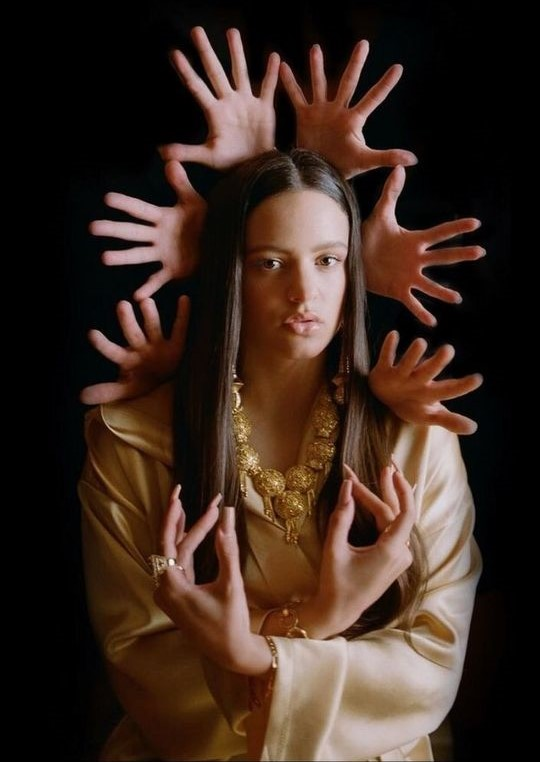
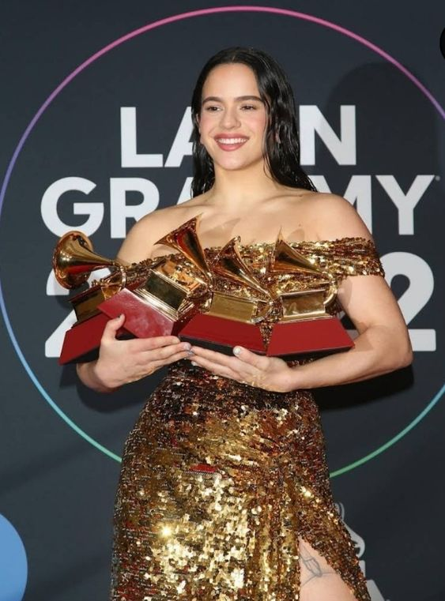
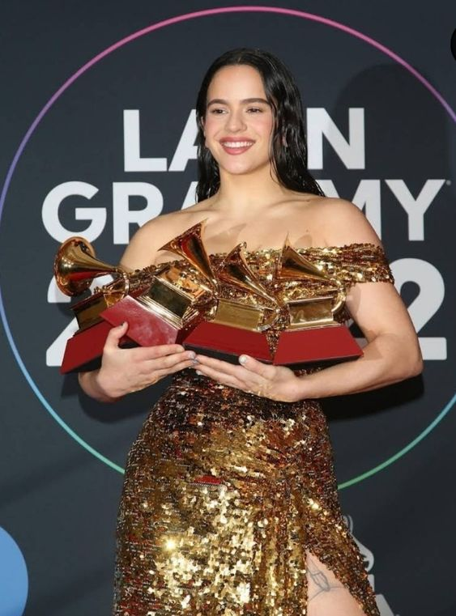

¿Quién es La Rosalía?

Rosalía es una cantante, compositora y productora española, conocida por su estilo musical que explora sonidos
de flamenco contemporáneo. Mezclando la música tradicional española con géneros como el hip-hop, pop, el trap y
la música electrónica, creó un nuevo sonido dentro de la música experimental. Rosalía es la primera hispana en
formar parte de la lista de diez nominados a la BBC Sound of 2019.
Nacida en San Esteban de Sasroviras, España. Comenzó sus estudios en la escuela del Raval, en Barcelona, luego gracias
a sus calificaciones y buenas recomendaciones fue transferida a la Escuela Superior de Música de Cataluña.
El primer encuentro de Rosalía con la industria de la música fue en 2008, cuando la cantante se presentó en el programa
de televisión español Tú sí que vales a los 15 años. Rosalía interpretó su versión de la canción Como en un mar eterno
de Hanna, pero no fue seleccionada para el programa. Al inicio de su carrera estuvo involucrada en varios proyectos que
la pusieron en el radar de la música española, la cantante participó en un dúo con Juan Gómez ‘Chicuelo’ en el Festival
Internacional de Cine de 2013 de Panamá y el famoso Festival Grec de Barcelona. Colaboró en un espectáculo de La Fura
Dels Baus en 2015, llevándola a presentarse en Singapur.
Información sobre el albúm
El mal querer es el segundo álbum de estudio de la cantautora española, publicado el 2 de noviembre de 2018 a través de
Sony Music. Está producido conjuntamente por ella misma y El Guincho. El día de su estreno alcanzó el número uno en la lista de
álbumes de Tunes en España y consiguiendo entrar a las listas de diferentes países como Canadá, Estados Unidos, Francia, Italia,
Reino Unido
Presentado como un álbum experimental y conceptual, girando en torno a una relación tóxica, se inspira en una novela anónima en
occitano del siglo XIII titulada Flamenca, con la que consiguió posicionarse entre la lista de los 500 mejores álbumes de todos
los tiempos según Rolling Stone. Antes de la publicación del álbum se lanzaron tres sencillos: «Malamente», «Pienso en tu mirá»
y «Di mi nombre». Posteriormente se lanzaron los videoclips de «Bagdad» y «De aquí no sales», que se convirtieron en éxitos
virales debido a su estética y simbolismo poético.
ㅤ
ㅤ
ㅤ
ㅤ
ㅤ
Canciones
El albúm presenta un total de 11 canciones con una duración total de 30min 18s
Título
Capítulo
Duración
Malamente
Cap.1 Augurio
2.30min
Que no salga la luna
Cap.2 Boda
4.29min
Pienso en tu mirá
Cap.3 Celos
3.13min
De aquí no sales
Cap.4 Disputa
2.24min
Reniego
Cap.5 Lamento
3.28min
Preso
Cap.6 Clausura
40s
Bagdad
Cap.7 Liturgia
3.02min
Di mi nombre
Cap.8 Éxtasis
2.42min
Nana
Cap.9 Concepción
3.17min
Maldición
Cap.10 Cordura
2.55min
A ningún hombre
Cap.11 Poder
1.34min
Nominaciones y premios
El artista de la cantante española ha recibido diferentes nominaciones y
ha sido acreedora de disntintos galardones, siendo estos algunos:
-
Premios Grammy 2020
- Mejor álbum alternativo o rock latino
- Ganadora

-
Premios Grammy Latino 2019
- Álbum del Año
- Ganadora
- Álbum Pop Vocal Contemporáneo
- Ganadora
- Mejor Diseño de Empaque
- Ganadora
- Mejor Ingeniería de Grabación
- Ganadora
- Mejor Canción Pop: Pienso en tu mirá
-
Premios Grammy Latino 2018
- Grabación del año: Malamente
- Canción del año
- Mejor Fusión/Interpretación Urbana: Malamente
- Ganadora
- Mejor Canción Alternativa: Malamente
- Ganadora
- Mejor Vídeo Musical:Malamente
Rosalía es una cantante, compositora y productora española, conocida por su estilo musical que explora sonidos de flamenco contemporáneo. Mezclando la música tradicional española con géneros como el hip-hop, pop, el trap y la música electrónica, creó un nuevo sonido dentro de la música experimental. Rosalía es la primera hispana en formar parte de la lista de diez nominados a la BBC Sound of 2019.
Nacida en San Esteban de Sasroviras, España. Comenzó sus estudios en la escuela del Raval, en Barcelona, luego gracias a sus calificaciones y buenas recomendaciones fue transferida a la Escuela Superior de Música de Cataluña.
El primer encuentro de Rosalía con la industria de la música fue en 2008, cuando la cantante se presentó en el programa de televisión español Tú sí que vales a los 15 años. Rosalía interpretó su versión de la canción Como en un mar eterno de Hanna, pero no fue seleccionada para el programa. Al inicio de su carrera estuvo involucrada en varios proyectos que la pusieron en el radar de la música española, la cantante participó en un dúo con Juan Gómez ‘Chicuelo’ en el Festival Internacional de Cine de 2013 de Panamá y el famoso Festival Grec de Barcelona. Colaboró en un espectáculo de La Fura Dels Baus en 2015, llevándola a presentarse en Singapur.
Información sobre el albúm
El mal querer es el segundo álbum de estudio de la cantautora española, publicado el 2 de noviembre de 2018 a través de Sony Music. Está producido conjuntamente por ella misma y El Guincho. El día de su estreno alcanzó el número uno en la lista de álbumes de Tunes en España y consiguiendo entrar a las listas de diferentes países como Canadá, Estados Unidos, Francia, Italia, Reino Unido
Presentado como un álbum experimental y conceptual, girando en torno a una relación tóxica, se inspira en una novela anónima en occitano del siglo XIII titulada Flamenca, con la que consiguió posicionarse entre la lista de los 500 mejores álbumes de todos los tiempos según Rolling Stone. Antes de la publicación del álbum se lanzaron tres sencillos: «Malamente», «Pienso en tu mirá» y «Di mi nombre». Posteriormente se lanzaron los videoclips de «Bagdad» y «De aquí no sales», que se convirtieron en éxitos virales debido a su estética y simbolismo poético.
ㅤ ㅤ ㅤ ㅤ ㅤ
Canciones
El albúm presenta un total de 11 canciones con una duración total de 30min 18s
| Título | Capítulo | Duración |
|---|---|---|
| Malamente | Cap.1 Augurio | 2.30min |
| Que no salga la luna | Cap.2 Boda | 4.29min |
| Pienso en tu mirá | Cap.3 Celos | 3.13min |
| De aquí no sales | Cap.4 Disputa | 2.24min |
| Reniego | Cap.5 Lamento | 3.28min |
| Preso | Cap.6 Clausura | 40s |
| Bagdad | Cap.7 Liturgia | 3.02min |
| Di mi nombre | Cap.8 Éxtasis | 2.42min |
| Nana | Cap.9 Concepción | 3.17min |
| Maldición | Cap.10 Cordura | 2.55min |
| A ningún hombre | Cap.11 Poder | 1.34min |
Nominaciones y premios
El artista de la cantante española ha recibido diferentes nominaciones y ha sido acreedora de disntintos galardones, siendo estos algunos:
-
Premios Grammy 2020
- Mejor álbum alternativo o rock latino
- Ganadora 
-
Premios Grammy Latino 2019
- Álbum del Año
- Ganadora
- Álbum Pop Vocal Contemporáneo
- Ganadora
- Mejor Diseño de Empaque
- Ganadora
- Mejor Ingeniería de Grabación
- Ganadora
- Mejor Canción Pop: Pienso en tu mirá
-
Premios Grammy Latino 2018
- Grabación del año: Malamente
- Canción del año
- Mejor Fusión/Interpretación Urbana: Malamente
- Ganadora
- Mejor Canción Alternativa: Malamente
- Ganadora
- Mejor Vídeo Musical:Malamente